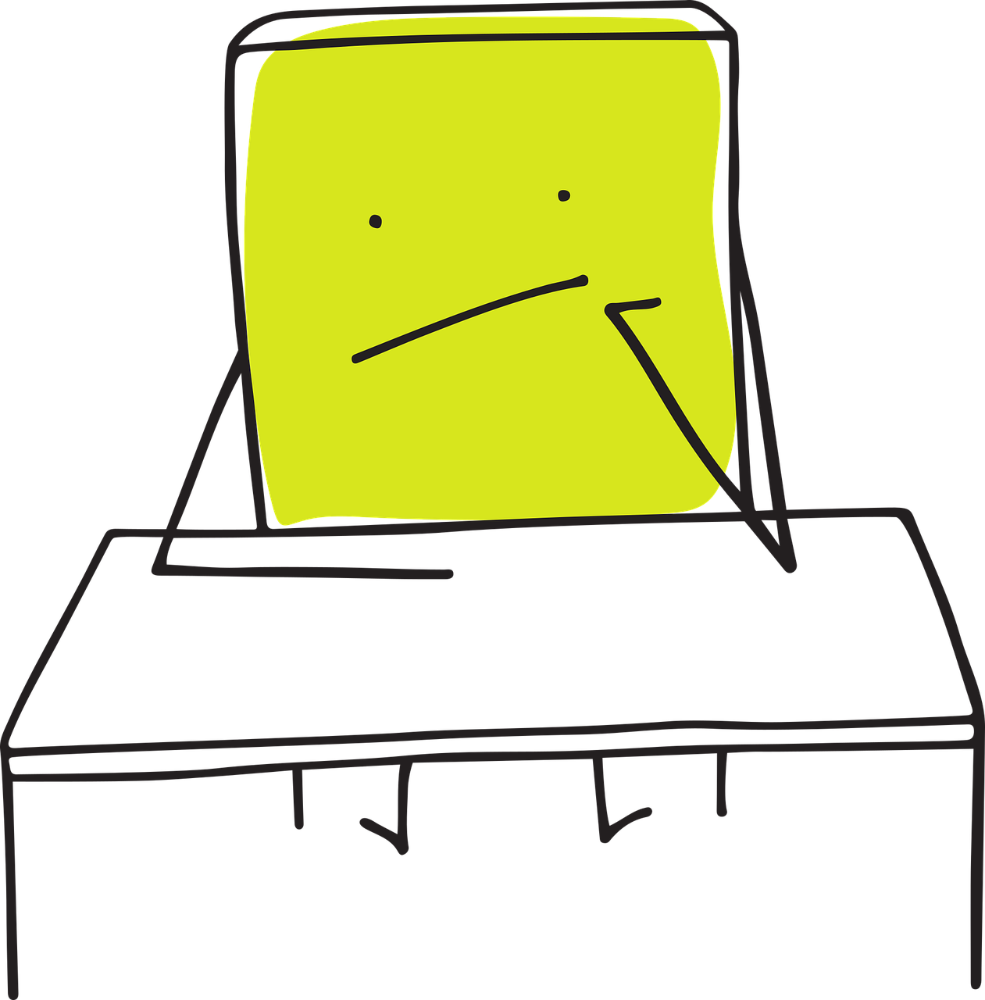
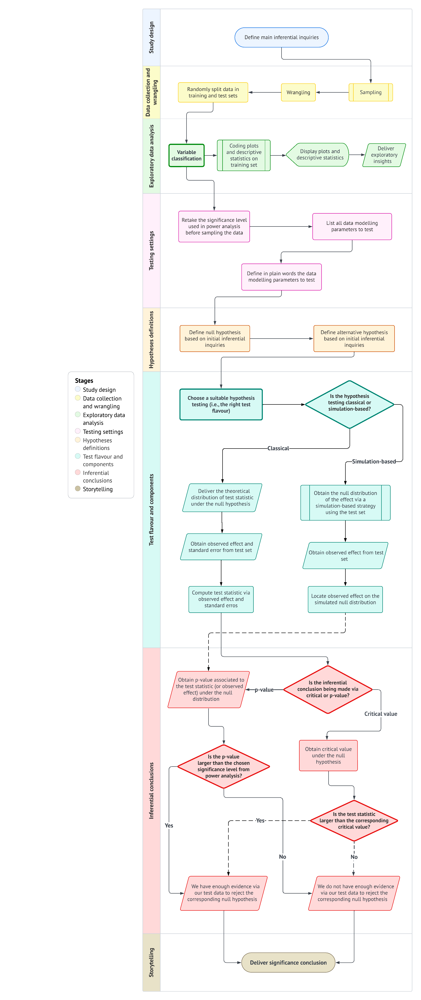

mindmap
root((Frequentist
Hypothesis
Testings
))
Simulation Based<br/>Tests
Classical<br/>Tests
(Chapter 1: <br/>Tests for One<br/>Continuous<br/>Population Mean)
{{Unbounded<br/>Response}}
{{Proportion between<br/>0 and 1<br/>obtained from a <br/>Binary Response}}
(Chapter 2: <br/>Tests for Two<br/>Continuous<br/>Population Means)
Two<br/>Independent<br/>Populations
{{Unbounded<br/>Responses}}
{{Proportions between<br/>0 and 1<br/>obtained from two <br/>Binary Responses}}
Two<br/>Related<br/>Populations or<br/>Measurements
{{Unbounded<br/>Responses}}
(Chapter 3: <br/>ANOVA related <br/>Tests for<br/>k Continuous<br/>Population Means)
{{Unbounded<br/>Responses}}
1 Introduction
The most important maxim for data analysis to heed, and one which many statisticians seem to have shunned, is this: “Far better an approximate answer to the right question, which is often vague, than an exact answer to the wrong question, which can always be made precise.”
John W. Tukey (1962, 13)
Data collection worldwide has proven to be a valuable tool for uncovering significant insights across various populations of interest. Whether it involves capturing political preferences in a specific demographic ahead of an upcoming election or assessing the effectiveness of an innovative medical treatment through a randomized clinical trial compared to a standard treatment, data plays a crucial role in enhancing our understanding. At times, this understanding can become quite complex, especially when attempting to untangle the relationships between different variables within a given population or even across two or more populations.

In a vast and diverse field like data science, it is crucial to craft effective and transparent solutions that facilitate proper data analysis. However, conducting a full census to collect data from entire populations can often be impractical due to resource limitations such as budget constraints, workforce shortages, or insufficient technical infrastructure. Despite these challenges, our primary objective remains to gain insights about any population of interest via some class of analysis, even when data availability is limited. In this regard, statistical inference is a powerful tool that allows us to draw insights even with limited data. That said, it is important to emphasize that the process of statistical inference begins with asking the right questions, even before data collection occurs.
In light of this context, we need to establish the appropriate stages of the statistical inference process, along with a useful tool to help select the right hypothesis test based on our specific context, research questions, variable types, and parameters of interest. This is why this mini-book focuses on two key components:
- A test workflow: This workflow will primarily guide us in formulating the right questions about our population(s) of interest, which will involve specific parameters. This process will generally proceed with data collection using a specific sampling method, followed by a thorough analysis that includes exploratory data analysis and the most suitable hypothesis testing based on our primary question(s). We will conclude the process by presenting a compelling storytelling to our stakeholders. Section 1.1 will elaborate further on this workflow.
- A series of test mind maps: Since the test workflow ultimately involves selecting the most suitable hypothesis test, we require a form of guidance to choose these tests according to the inferential question(s) we want to address. Therefore, Section 1.2 will introduce our core test mind map from Figure 1.2, which will direct us to more detailed mind maps each time we introduce a new chapter.
This mini-book on hypothesis testing is intended to serve as a practical manual rather than a traditional statistical textbook. Furthermore, it focuses on providing applied examples in each chapter without any additional exercises for the reader. We aim to explain the necessary mathematical formulas in straightforward language, avoiding formal proofs for these expressions. Additionally, we will establish conventions using admonitions to offer key insights and links to supplementary and more in-depth material.
Heads-up!
A key insight (or insights) related to a specific hypothesis test or a stage in the test workflow. The reader is advised to keep this heads-up in mind throughout the showcase of the corresponding example in any given chapter.
Tip
An idea or ideas that extend beyond the immediate discussion and can offer valuable context and insightful background. Whenever relevant, we will provide references for further reading to deepen understanding and enhance knowledge.
1.1 The Test Workflow
There is a single test workflow for many different flavours!
The statement above summarizes the essence of our testing workflow, which requires a detailed examination in this section. Primarily, it is crucial to understand that mastering all hypothesis tests involves more than just knowing their mathematical formulas or coding functions; it requires a disciplined and structured process. Whether we are evaluating evidence against a null hypothesis—the status quo of our population parameter(s) of interest—or reporting the uncertainty of an estimated effect, the workflow outlined by Figure 1.1 is intended to align your main inferential inquiries with the most suitable test flavour. Regardless of the flavour chosen, this workflow is designed to ensure that our conclusions are not only statistically valid but also based on clear and purposeful reasoning.

The workflow for hypothesis testing consists of eight stages, which will be discussed in detail in the following sections:
- Study design: This initial stage, referred to as the main inferential inquiries, outlines the primary questions we aim to answer through our analysis.
- Data collection and wrangling: The inquiries established in the first stage will guide the design of our data collection, utilizing a specific sampling scheme. Once the data is collected, it must be wrangled and split into two sets: training and test.
- Exploratory data analysis: In this stage, we classify variables to provide preliminary insights using descriptive statistics and visualizations via the training set.
- Testing settings: We must revisit the significance level used in our power analysis (i.e., the procedure used to obtain the minimum sample size \(n\) of data points to be collected). Additionally, we need to list all modelling parameters that will be tested.
- Hypothesis definitions: With the modelling parameters to test, we need to define our hypotheses: the null hypothesis versus the alternative hypothesis. These should be framed in relation to the main inferential inquiries.
- Test flavour and components: At this stage, we choose the most appropriate test flavour. Depending on whether the test is classical or simulation-based, we will then identify the necessary components to compute the critical values or \(p\)-values (via the test set) for the next stage.
- Inferential conclusions: The goal of this stage is to determine whether we should reject the null hypothesis based on the critical values or \(p\)-values obtained.
- Storytelling: Finally, communicate the findings through a clear and engaging narrative that is accessible to your stakeholders.
